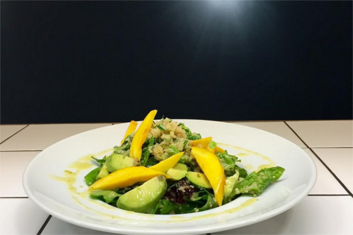
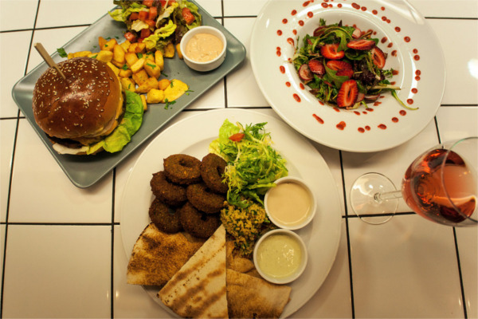
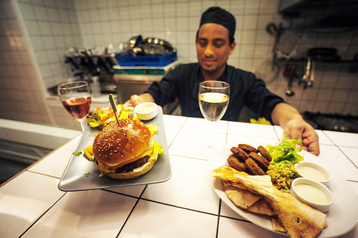

211-4114420 Akadimias 84, Athens
Καποιο κειμενο σαν τιτλο εδω ..
Ένα νέο vegetarian / vegan εστιατόριο στο κέντρο της Αθήνας που απευθύνεται σε όλους όσους ζητούν μια γρήγορη και υγιεινή εναλλακτική. Απλό, καθημερινό, με προτάσεις vegetarian, vegan και χωρίς γλουτένη, επιτόπου ή to go. Ο σεφ Polash Αlan παίζει με γεύσεις της Μεσογείου, της Ασίας και της Λατινικής Αμερικής.
Ένας μικρός χώρος, στην οδό Ακαδημίας, κοντά στην πλατεία Κάνιγγος, αποτελεί το εγχείρημα ενός ταλαντούχου Ινδού σεφ από τη Καλκούτα.Στη " Μαμά Γή " συνδυάζονται με γνώση και μεράκι η έθνικ, η κοσμοπολίτικη και ανατολίτικη κουζίνα, με τον σύγχρονο vegan προσανατολισμό στη νέα γαστρονομία αλλά και στο μοντέρνο λαϊφστάιλ.
Ο χώρος του εστιατορίου είναι αρκετά μικρός, πολύ απλά διακοσμημένος αλλά καθαρός και προσεγμένος. Μου άρεσαν πολύ τα βαζάκια με τα διαφόρων λογής μπαχαρικά που ανοιγόκλεινε συνέχεια ο Σεφ με ταχύτητα και μαεστρία. Η ανοιχτή κουζίνα είναι ένα μεγάλο ατού του περιορισμένου αυτού χώρου.
Quinoa
Quinoa is a species of the goosefoot genus (Chenopodium quinoa), a grain crop grown primarily for its edible seeds. It is a pseudocereal, similar in some respects to buckwheat, rather than a true cereal, as it is not a member of the true grass family. As a chenopod, quinoa is closely related to species such as beetroots, spinach and tumbleweeds. As a member of the Amaranthaceae family, it is related to and resembles amaranth, which is also a pseudocereal. After harvest, the seeds must be processed to remove the coating containing the bitter-tasting saponins. The seeds are in general cooked the same way as rice and can be used in a wide range of dishes. The leaves are eaten as a leaf vegetable, much like amaranth, but commercial availability of quinoa greens is limited.
Dishes
Εδώ και ένα περίπου χρόνο, αυτό το εστιατόριο με την όμορφη διακόσμηση και το εξυπηρετικό προσωπικό είναι επιλογή όλων αυτών που θέλουν μεν να φάνε έξω, αλλά υγιεινά. Εννοείται νομίζω ότι δε χρειάζεται να είναι κανείς χορτοφάγος για να το επισκεφθεί, πρέπει όμως να πάει με άδειο στομάχι, γιατί στο mama tierra ξέρουν από πολύ καλό φαγητό!
Burger
Totally enjoyed the food at this quaint little restaurant. Excellent service and reasonable prices. Had the mushroom burger, best ever - totally need the recipe please to make at home in New Zealand!!! Also had the Aubergine balls - so tasty and filling.